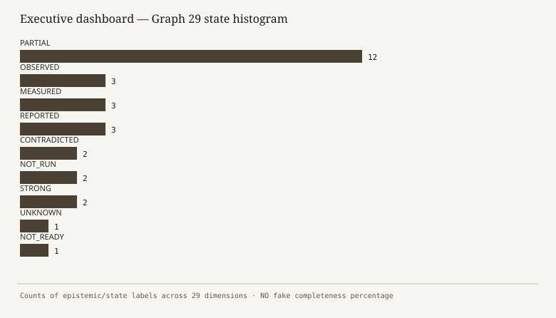
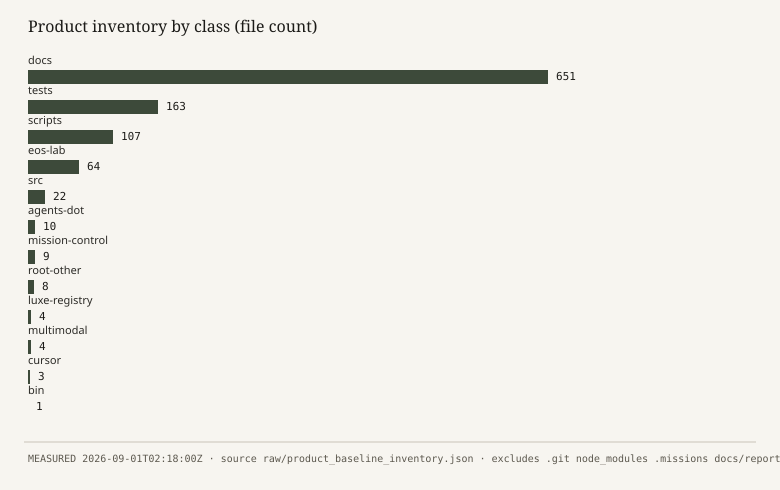
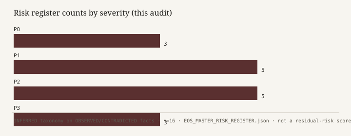
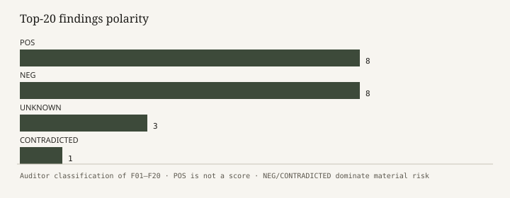
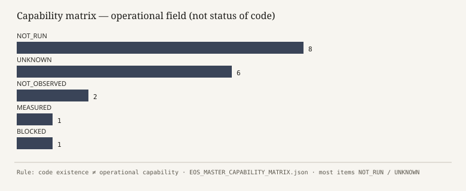
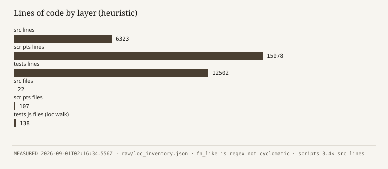
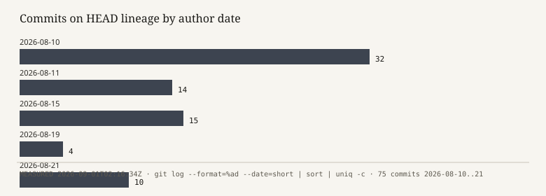
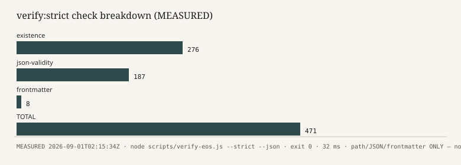

Board version · Report EOS-MSR-2026-09-01-001 · Audit AUD-EOS-MASTER-20260901-021328Z · Generated 2026-09-01T02:18:00Z
Repository: https://github.com/valentinflorezarbelaez-ai/Eos-
VM path: /workspace · HEAD at start: 24b69689c447f94afebd4893f5f0f83f45e0a823
Verdict: D — NOT_READY · Production ready: NO · Local-complete on this HEAD: UNKNOWN
This atlas is the 20–30 page board cut of the master report. It does not add metrics. Every figure is in EOS_MASTER_SYSTEM_DATA.json / EOS_MASTER_SYSTEM_METRICS.csv.
EOS is a GitHub-hosted Node.js “Engineering Operating System”: governance documents, a local Mission OS kernel (src/core), a larger legacy/lab factory (scripts/engine), tests, and mission-control JSON. It is not a running production SaaS in this environment.
This audit was read-only except for writing these report files.
| Surface | State |
|---|---|
| File/JSON verifier | VERIFIED (471/471) |
| Mission OS source | STRONG (exists) |
| Tests executed | NOT_READY (NOT_RUN) |
| Health telemetry | CONTRADICTED |
| Production | NOT_READY |
| Fundación product | NOT_READY (empty) |
| Third-party MCP live | UNKNOWN |
| npm supply chain | STRONG (zero deps) |
|---|

D — NOT_READY.
Not C: freeze suite and MissionRuntime were not reproduced on this HEAD.
Not E: kernel source exists; verifier passed; git intact.
Ultimate board question: treat EOS as an operational production autonomous system today? NO.
| Quote | Do not say |
|---|---|
| verify:strict 471/471 PASS, 32 ms, 2026-09-01T02:15:34Z | “472 tests” / “full suite green” |
777 static test()/it() calls in 132 files | “777 tests passed” |
| 1046 product files, 651 docs | “62% complete” |
| 22 src files, 6323 lines; scripts 15978 lines | “scripts are the product” without dual-plane caveat |
75 commits, 1 RC tag, HEAD 24b6968 | “main is still 78b28d6” |
| 0 npm dependencies | “no code dependencies anywhere” (Lab imports hono/astro) |
0 hits for 726/726 and 615/615 | those historical memory numbers |
|---|
Two planes:
1. Mission OS — bin/eos.js → MissionRuntime → ATS / FSM / HITL / Integration gate / MCP bridge.
2. Legacy factory — scripts/cli/eos.js + 100+ engines, including three duplicate kernel filenames.
Documented modules synthesisEngine.js / executionOrchestrator.js / scripts/engine/core are not in the tree.

HITL human-only actions are explicit in source (direction/release gates, production release, credentials, constitution exceptions). That is OBSERVED text, not a runtime proof.
.cursor/mcp.json sets EOS_MODE=read-write LEVEL_1 — looser than the server’s default read-only.
MissionRuntime mkdir .missions in the constructor — even help is not a pure read. Help was therefore NOT_RUN.
Six registry projects; Fundación empty; GAP-002 still UNKNOWN (do not infer NIT/banking).
BUDGET.json $0.32 / 45200 tokens: REPORTED, not measured. Do not use in finance discussions.


Do not average the 0–5 ordinals. They exist so a board packet can *see* imbalance (testing/security/docs drift vs git/deps).
1. Is EOS production ready? — NO
2. Is EOS complete for local governed use? — PARTIAL
3. Does a real Mission OS kernel exist in src/? — YES
4. Did this audit run the product test suite? — NO
5. Did any automated gate pass here? — YES
6. Are published test-health numbers trustworthy? — NO
7. Is CORE frozen as a single inode? — UNKNOWN
8. Is PRJ-FUNDACION operational? — NO
9. Is GAP-002 resolved? — NO
10. Are third-party MCPs connected here? — UNKNOWN
11. Is there an npm lockfile / installed deps? — NO
12. Can we claim 726/726 or 615/615 tests? — NO
13. Is security Step-9 matrix applicable to current src/core? — NO
14. Should the board authorize production or client writes? — NO
15. What is the single best next measurement? — Isolated freeze-suite replay
1. Stop publishing 663/608/472/20 as *current* without a new MEASURED run (REC01).
2. Quarantine Step-9 matrix as historical (REC03).
3. Update or supersede freeze docs for HEAD 24b69689 (REC04).
4. Replay the 4-file freeze suite in a tmp workdir and seal the log (REC07).
5. Declare src/core the only kernel; mark scripts/engine duplicates deprecated (REC08).
6. Keep PRODUCTION_READY=NO (REC18).
7. Keep GAP-002 UNKNOWN (REC12).

Positive: verifier works; kernel source exists; zero npm deps; PRODUCTION_READY=NO is honest at system level.
Negative: contradictory health, missing security targets, stale freeze SHA, dual kernel, empty Fundación, MCP over-claim.

Most capabilities are NOT_RUN or UNKNOWN. Only the file/JSON gate is MEASURED.


75 commits in 11 days (10–21 Aug 2026). Fast document+code accretion. Drift risk is structural.

276 existence + 187 JSON + 8 frontmatter = 471. This is a workspace integrity linter, not a product test.
1. Verdict D (§C).
2. Numbers table (§D) — refuse any other headline figure.
3. Contradictions (master report §46).
4. P0/P1 risks (§I).
5. Ultimate NO (§C / master §51).
Prepared by a Cloud Agent under read-only constraints. It cannot certify production. It can certify that, on this VM, at these timestamps, the listed commands produced the listed outputs.
Full narrative: EOS_MASTER_SYSTEM_REPORT.md (53 sections).
*End of Executive Atlas.*
| Field | Value | Class |
|---|---|---|
| Report ID | EOS-MSR-2026-09-01-001 | — |
| Audit ID | AUD-EOS-MASTER-20260901-021328Z | — |
| Abs path | /workspace | MEASURED |
| HEAD | 24b69689c447f94afebd4893f5f0f83f45e0a823 | MEASURED |
| Node / npm / git | v22.14.0 / 10.9.7 / 2.43.0 | MEASURED |
| Package manager | npm scripts; no lockfile; 0 deps | OBSERVED |
| Commits / tracked files / tags | 75 / 1048 / 1 | MEASURED |
|---|
This page exists so a director can file the audit without opening the 53-section report.
If a slide still shows 726, 615, 663, 608, 472, or 20 as *today’s* health, it is wrong.
| ID | A | B | Label |
|---|---|---|---|
| CX-01 | CURRENT_STATE 663/663 | suite NOT_RUN; static 777 | CONTRADICTED |
| CX-02 | cli fallback 608/608 | same | CONTRADICTED |
| CX-03 | historical verify 472/472 | this run 471/471 | CONTRADICTED |
| CX-04 | freeze main 78b28d6 | HEAD 24b6968 | CONTRADICTED |
| CX-05 | Step-9 remediations | target files absent | CONTRADICTED |
| CX-06 | RISK.json scripts/engine/core | directory absent | CONTRADICTED |
| CX-07 | MCP CONNECTED | not observed here | CONTRADICTED |
| CX-08 | memory 726/726 | 0 hits in tree | CONTRADICTED |
| CX-09 | memory 615/615 | 0 hits as live metric | CONTRADICTED |
| CX-10 | freeze 20/20 as current | HEAD moved; NOT_RUN | CONTRADICTED as current |
| CX-11 | CORE FROZEN slogan | src/core changed after freeze docs | CONTRADICTED if Δ=0 |
| CX-12 | EVD-0033/34 PRODUCTION_READY | system dictamen NO | CONTRADICTED if global |
|---|
System-level PRODUCTION_READY=NO is consistent and accepted.
| # | Dimension | State | Note |
|---|---|---|---|
| 1 | 01 Architecture coherence | PARTIAL | Dual planes src/core vs scripts/engine; 3 duplicate kernel basenames |
| 2 | 02 Documented vs actual | CONTRADICTED | Security matrix cites missing synthesisEngine/executionOrchestrator; freeze HEAD stale |
| 3 | 03 Entrypoints | PARTIAL | bin/eos.js and scripts/cli/eos.js both exist; CLI --help not executed (mkdir side effect) |
| 4 | 04 MissionRuntime | OBSERVED | Class and methods exist; no .missions; constructor not invoked this audit |
| 5 | 05 FSM | OBSERVED | 17 states, 16 transitions imported from src/core/sdd/sdd-fsm-engine.js |
| 6 | 06 Authority / HITL | OBSERVED | ATS + HitlGatekeeper modules exist; runtime not exercised |
| 7 | 07 Tools / MCP | PARTIAL | 20 tools declared in src; MCP CONNECTED claims not observed on this VM |
| 8 | 08 Governance matrix | PARTIAL | Policies and RISK.json exist; frozen-core path scripts/engine/core missing |
| 9 | 09 Security matrix | CONTRADICTED | EOS_STEP_9_SECURITY_MATRIX.json remediates files that do not exist |
| 10 | 10 Bypass resistance | UNKNOWN | Guards exist in source; bypass suite not executed this audit |
| 11 | 11 Evidence system | PARTIAL | 84 evidence JSON files exist; contents treated as REPORTED |
| 12 | 12 Testing inventory | MEASURED | 132 test-like files; 777 static test()/it() calls; count ≠ coverage |
| 13 | 13 Testing execution | NOT_RUN | npm test / test:all / coverage not executed |
| 14 | 14 V&V | PARTIAL | verify:strict MEASURED; dynamic V&V NOT_RUN |
| 15 | 15 Reproducibility | PARTIAL | L0 builtins policy + no lockfile; clean-clone of core is plausible, not replayed |
| 16 | 16 Git health | STRONG | 75 commits, 1 tag, clean start, remote origin present |
| 17 | 17 Code health | PARTIAL | src 22 files / 6323 lines; scripts 3.4x larger; lint/typecheck NOT_RUN |
| 18 | 18 Dependency health | STRONG | No npm dependencies in package.json; node_modules absent |
| 19 | 19 Agents | REPORTED | 16 docs agents + 7 mission-control agents; no live process observed |
| 20 | 20 Knowledge plane | REPORTED | docs/knowledge and intelligence JSON exist; not executed |
| 21 | 21 Ops maturity | PARTIAL | Mission-control JSON present; telemetry hash not reproduced |
| 22 | 22 Performance | NOT_RUN | No runtime/perf measurements this audit |
| 23 | 23 Complexity | MEASURED | LOC and import-edge counts only; no cyclomatic tool run |
| 24 | 24 Fitness functions | REPORTED | verify-eos is a fitness-like gate for files/JSON, not product fitness |
| 25 | 25 Projects | PARTIAL | 6 registry projects; Fundacion/ empty; Windows paths invalid here |
| 26 | 26 History | MEASURED | 11-day burst 2026-08-10..21; 75 commits |
| 27 | 27 Risk management | PARTIAL | Registers exist; several are stale or self-certifying |
| 28 | 28 Production readiness | NOT_READY | PRODUCTION_READY=NO consistently reported; this audit agrees |
| 29 | 29 Epistemic honesty | PARTIAL | Constitution requires labels; live files still publish stale pass-counts |
|---|
| ID | Sev | Title | Class |
|---|---|---|---|
| R-P0-01 | P0 | Stale/contradictory system-health pass counts used as live telemetry | CONTRADICTED |
| R-P0-02 | P0 | Security remediations cite modules that do not exist | CONTRADICTED |
| R-P0-03 | P0 | npm test not executed; mutation risk in suite | NOT_RUN |
| R-P1-01 | P1 | Dual kernel copies (src/core vs scripts/engine) | OBSERVED |
| R-P1-02 | P1 | MCP CONNECTED claims vs this environment | CONTRADICTED |
| R-P1-03 | P1 | Freeze documents pin stale main SHA | CONTRADICTED |
| R-P1-04 | P1 | PRJ-FUNDACION empty; GAP-002 still UNKNOWN | OBSERVED |
| R-P1-05 | P1 | CLI constructor creates .missions as side effect | OBSERVED |
| R-P2-01 | P2 | Registry paths are Windows absolute and invalid on this VM | OBSERVED |
| R-P2-02 | P2 | Budget/usage telemetry not reproduced | REPORTED |
| R-P2-03 | P2 | RISK.json freezes scripts/engine/core which does not exist | CONTRADICTED |
| R-P2-04 | P2 | Historical PRODUCTION_READY verdicts inside EVD-0033/34/35 | REPORTED |
| R-P2-05 | P2 | Heuristic secret-like assignments in tests/engines | OBSERVED |
| R-P3-01 | P3 | Docs dominate inventory (651/1046 files) | MEASURED |
| R-P3-02 | P3 | No lockfile under L0 policy | OBSERVED |
| R-P3-03 | P3 | sqlite artifacts in EOS-Lab | OBSERVED |
|---|
| ID | Pol | Title | Class |
|---|---|---|---|
| F01 | POS | verify:strict executed 471/471 PASS exit 0 in 32 ms | MEASURED |
| F02 | POS | Mission OS kernel modules exist under src/core (22 JS files, 6323 lines) | MEASURED |
| F03 | POS | package.json has zero npm dependencies; L0 builtins policy matches observation | OBSERVED |
| F04 | POS | PRODUCTION_READY=NO is consistent across CURRENT_MISSION and freeze docs | REPORTED |
| F05 | POS | GAP-002 remains labeled UNKNOWN in mission-control and unknown register | REPORTED |
| F06 | POS | Git history is short, linear, tagged RC; start working tree was clean | MEASURED |
| F07 | POS | MCP tool table in src is enumerable (20 tools) with deny-by-default comments | OBSERVED |
| F08 | POS | HITL human-only action set is explicit in source | OBSERVED |
| F09 | NEG | System health numbers contradict each other (20 / 471 / 472 / 608 / 663 / static 777) | CONTRADICTED |
| F10 | NEG | 726/726 and 615/615 previous-memory claims are not in this tree | CONTRADICTED |
| F11 | NEG | Security matrix remediates nonexistent src/core modules | CONTRADICTED |
| F12 | NEG | Freeze status pins main=78b28d6; actual HEAD=24b6968 | CONTRADICTED |
| F13 | NEG | ACTIVE_TOOLS.json reports MCP CONNECTED; not observed on this VM | CONTRADICTED |
| F14 | NEG | Dual FSM/HITL/evidence engines (src vs scripts) | OBSERVED |
| F15 | NEG | Fundacion/ is empty; registry points at Windows path | OBSERVED |
| F16 | NEG | RISK.json freezes scripts/engine/core which does not exist | CONTRADICTED |
| F17 | UNKNOWN | npm test / coverage / CLI runtime / MCP stdio smoke not run this audit | NOT_RUN |
| F18 | UNKNOWN | Whether 20/20 freeze tests still pass on 24b6968 is unknown | NOT_RUN |
| F19 | UNKNOWN | BUDGET.json usage figures have no measurement chain here | REPORTED |
| F20 | CONTRADICTED | Documented CORE freeze locations do not match a single existing kernel directory | CONTRADICTED |
|---|
| ID | Finding | Recommendation |
|---|---|---|
| REC01 | F09 | Remove or timestamp-lock all live test-health strings; single measured source or NONE |
| REC02 | F10 | Never restore 726/726 or 615/615 without a new MEASURED run |
| REC03 | F11 | Quarantine EOS_STEP_9_SECURITY_MATRIX.json as HISTORICAL / NOT_APPLICABLE_TO_CURRENT_TREE |
| REC04 | F12 | Rewrite freeze gate docs to current HEAD or mark SUPERSEDED |
| REC05 | F03 | Keep L0 no-dep policy until a lockfile gate exists |
| REC06 | F17 | Create a declared non-mutating test subset (tmp workdir only) and run it under evidence |
| REC07 | F18 | Re-run the freeze 4-file suite in an isolated tmp dir; record exit and SHA |
| REC08 | F14 | Declare one authoritative kernel path; mark the other DEPRECATED in code not just docs |
| REC09 | F13 | Change ACTIVE_TOOLS MCP status from CONNECTED to CONFIGURED or UNKNOWN until a live handshake |
| REC10 | F15 | Keep Fundacion empty until GAP-002 official source; do not infer legal data |
| REC11 | F16 | Point CORE-freeze monitors at src/core (or the real path), not scripts/engine/core |
| REC12 | F05 | Leave GAP-002 UNKNOWN; do not close from web inference |
| REC13 | F19 | Treat BUDGET.json current_usage as demo/stale until a ledger backs it |
| REC14 | R-P1-05 | Stop mkdir in MissionRuntime constructor; create on first write |
| REC15 | F20 | Publish a one-page ACTUAL architecture that names src/core as Mission OS and scripts/engine as legacy/lab |
| REC16 | F01 | Keep verify:strict but label it FILE_JSON_GATE not test health |
| REC17 | F07 | Do not claim eos.provider.* operational; mcp-status already lists them not_configured |
| REC18 | F04 | Retain PRODUCTION_READY=NO until measured runtime + security + tests exist |
| REC19 | R-P2-05 | Human-review the 10 heuristic secret-hit files |
| REC20 | F06 | Pin this audit SHA in any future health dashboard |
|---|
| ID | Name | Status | Operational | Evidence |
|---|---|---|---|---|
| CAP-CLI-MISSION | Mission CLI (bin/eos.js → MissionCLI) | OBSERVED | UNKNOWN | src/cli/mission-cli.js, bin/eos.js |
| CAP-MISSION-RUNTIME | MissionRuntime lifecycle | OBSERVED | NOT_RUN | src/core/runtime/mission-runtime.js |
| CAP-ATS | AuthorityTruthSource commitTransition | OBSERVED | NOT_RUN | src/core/authority/authority-truth-source.js |
| CAP-FSM | SDD FSM TransitionEnforcer | OBSERVED | NOT_RUN | src/core/sdd/sdd-fsm-engine.js import succeeded |
| CAP-HITL | HitlGatekeeper receipts | OBSERVED | NOT_RUN | src/core/sdd/hitl-gatekeeper.js |
| CAP-IG | IntegrationGatekeeper / FDIR | OBSERVED | NOT_RUN | src/core/governance/integration-gatekeeper.js |
| CAP-MCP-LOCAL | eos-local MCP server | OBSERVED | NOT_RUN | src/mcp-server.js + .cursor/mcp.json |
| CAP-MCP-EXTERNAL | Engram/Playwright/Figma/Slack MCP | REPORTED | NOT_OBSERVED | ACTIVE_TOOLS.json CONNECTED vs this Linux VM |
| CAP-VERIFY-STRICT | verify-eos --strict path/JSON gate | VERIFIED | MEASURED | 471/471 exit 0 at 2026-09-01T02:15:34Z |
| CAP-NPM-TEST | npm test suite | NOT_RUN | UNKNOWN | mutation risk |
| CAP-LEGACY-FACTORY | scripts/engine autonomous factory | OBSERVED | NOT_RUN | 107 script js files |
| CAP-FUNDACION | PRJ-FUNDACION product site | NOT_READY | NOT_OBSERVED | Fundacion/ empty; Windows path absent |
| CAP-LUXE | Luxe-Registry in-repo tree | OBSERVED | UNKNOWN | 4 files; registry claims PRODUCTION_READY_WITHIN_TESTED_SCOPE |
| CAP-MULTIMODAL | Multimodal-Creative-Suite in-repo tree | OBSERVED | UNKNOWN | 4 files |
| CAP-CANARY-LAB | EOS-Lab canaries | OBSERVED | NOT_RUN | 64 files including .db |
| CAP-COVERAGE | Test coverage measurement | NOT_RUN | UNKNOWN | no coverage/ |
| CAP-PERF | Runtime performance telemetry | NOT_RUN | UNKNOWN | BUDGET.json is REPORTED |
| CAP-PROD-DEPLOY | Production deploy / network / credentials | NOT_READY | BLOCKED | RELEASE_CAPABILITY_MATRIX FUTURE/BLOCKED |
|---|
| Command (abbrev) | Exit | ms | Class |
|---|---|---|---|
| env + git metadata | 0 | 676 | MEASURED |
| branch + mkdir report dirs | 0 | 80 | MEASURED (allowed mutation) |
| inventory collector | 0 | 138 | MEASURED |
| existence listing | 0 | 72 | MEASURED |
| verify-eos --strict --json | 0 | 32 | MEASURED |
| verify-eos --strict | 0 | 29 | MEASURED |
| more collectors + kernel import | 0 | 199 | MEASURED |
| product baseline walk | 0 | 80 | MEASURED |
| npm test / CLI help / MCP start | — | — | NOT_RUN |
|---|
Allowed: “We have a local Mission OS codebase, a passing file/JSON gate (471/471), zero npm dependencies, and an honest PRODUCTION_READY=NO.”
Forbidden: “615/615 tests,” “726/726 tests,” “472/472 current,” “663/663 live,” “608/608,” “production ready,” “MCPs connected,” “CORE frozen meaning src cannot change,” “Fundación is an operating site,” “security 16/16 on current kernel.”
Next measurement that would change the verdict toward C (not A): isolated freeze-suite replay on 24b6968 with sealed logs, plus a non-mutating MissionRuntime inspect in tmp. That still would not make production ready.
| Class | Files | Bytes |
|---|---|---|
docs | 651 | 1930920 |
tests | 163 | 527460 |
scripts | 107 | 613812 |
eos-lab | 64 | 625146 |
src | 22 | 243380 |
agents-dot | 10 | 13862 |
mission-control | 9 | 7661 |
root-other | 8 | 22705 |
luxe-registry | 4 | 18303 |
multimodal | 4 | 17015 |
cursor | 3 | 3203 |
bin | 1 | 557 |
|---|
Total 1046 files / 4,024,024 bytes excluding this report directory. MEASURED.
bin/eos.js constructs MissionCLI, which constructs MissionRuntime, which mkdirSync('.missions') if missing. The auditor treated --help as mutating and marked it NOT_RUN. Help text was read from source instead (OBSERVED).
Legacy npm run eos is a different program (scripts/cli/eos.js) and embeds a fallback health string 608 / 608 PASS.
| Tool | Effects | Auth |
|---|---|---|
eos.mission.resolve | NONE | A0 |
eos.mission.start | LEDGER_WRITE | A1 |
eos.mission.status | READ_ONLY | A0 |
eos.mission.recover | LEDGER_WRITE | A1 |
eos.context.compile | READ_ONLY | A0 |
eos.ledger.get_features | READ_ONLY | A0 |
eos.ledger.update_feature | LEDGER_WRITE | A1 |
eos.authority.check | READ_ONLY | A0 |
eos.policy.validate | READ_ONLY | A0 |
eos.evidence.record | LEDGER_WRITE | A1 |
eos.evidence.get | READ_ONLY | A0 |
eos.verifier.run | READ_ONLY | A0 |
eos.provider.route | READ_ONLY | A0 |
eos.provider.health | READ_ONLY | A0 |
eos.workspace.discover | READ_ONLY | A0 |
eos.workspace.barrier_check | READ_ONLY | A0 |
eos.fdir.status | READ_ONLY | A0 |
eos.fdir.trip | NONE | A2 |
eos.audit.run | READ_ONLY | A0 |
eos.report.generate | READ_ONLY | A0 |
|---|
eos.provider.route and eos.provider.health are declared in source and marked not_configured in mcp-status.json.
VISION_INTAKE, MISSION_FORMULATION, HUMAN_DIRECTION_GATE, DISCOVER, DEFINE, PLAN, DELEGATE, SUPERVISE, VERIFY, REVIEW, HUMAN_RELEASE_GATE, OPERATE_AND_LEARN, PAUSED, BLOCKED, FAILED, CANCELLED, COMPLETED
Canonical transition count: 16. Imported from src/core/sdd/sdd-fsm-engine.js. Duplicate file exists under scripts/engine/.
84 JSON files sit in docs/evidence/. They are a store, not this audit’s certification. This audit’s evidence is only docs/reports/eos/master/raw/ plus the executed verify-eos logs.
Print EOS_MASTER_EXECUTIVE_ATLAS.html (this document) for the board. Keep EOS_MASTER_SYSTEM_REPORT.html for the technical committee. Attach EOS_MASTER_SYSTEM_METRICS.csv as the numbers sheet. Do not circulate charts without their captions.
*End of expanded Executive Atlas. Same numbers as the master report. Verdict remains D.*